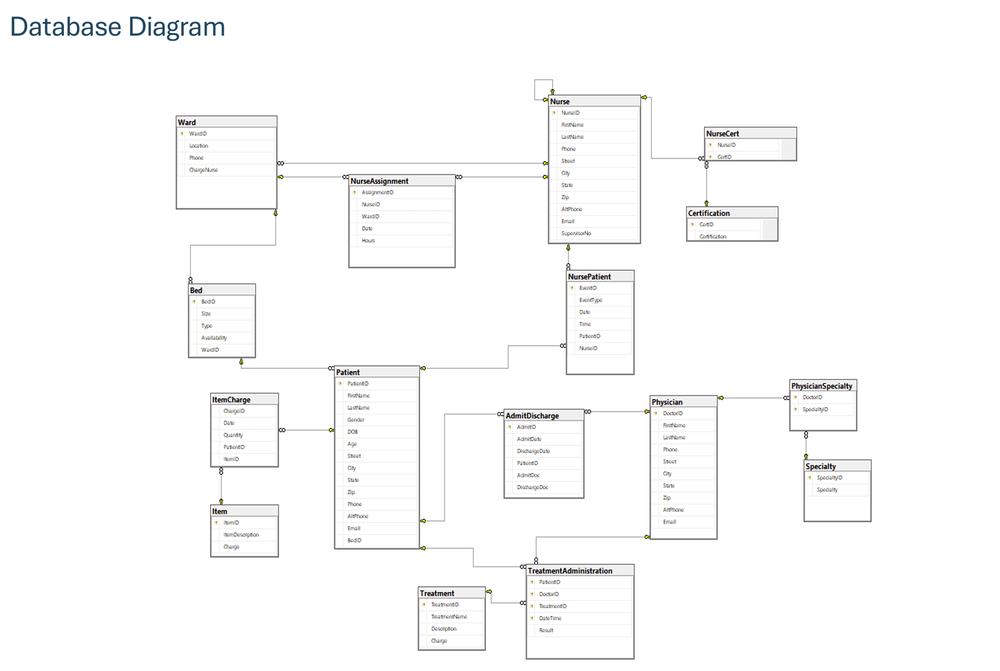

Hospital Administration System
Comprehensive Relational Database Architecture Specification
System Objective & Purpose
This technical system specification outlines an enterprise-grade database engine designed for a hospital administrator to systematically monitor administrative, clinical, and billing layers. The model provides multi-point data auditing covering nurse schedules, physical ward floor assignments, real-time patient bed workflows, multi-doctor clinical treatments, and historical item-level cost tracking.
Entity-Relationship Diagram (ERD & EERD)
The conceptual view outlines entity groups mapped out in the project documentation. Below is the mapped design schema tracking relational cardinalities:

Core Business Rules Implemented
- Organizational Hierarchy: A nurse can recursively supervise multiple other nurses. No nurse is supervised by more than one nurse, and some are unsupervised.
- Rotational Staffing Schedules: Nurses are cross-assigned across multiple wards over time. Tracking captures discrete timestamps alongside precise cumulative decimals for fractional shift hours worked.
- Ward Ownership Constraints: Each ward designates a single, unique Charge Nurse who acts as the primary legal custodian of medical records. No individual nurse may run multiple wards simultaneously.
- Bed Space Allocation Boundaries: Beds are permanently inventoried to specified physical wings. A physical bed location can support zero or one patient simultaneously; overlapping transactional occupancies are blocked at schema level.
- Clinical Admission Splits: Admissions explicitly decouple the initial admitting primary doctor from the concluding discharging doctor, supporting fluid cross-departmental operations.
- Granular Interaction Loggers: Captures structural micro-events spanning wellness checks, clinical medication cycles, food distribution routines, and active physical therapy protocols.
Relational Data Dictionary Engine
1. Table: Nurse
| Column Name | Data Type | Size | Attributes | Description / Domain Rules |
|---|---|---|---|---|
| NurseID | int | - | PK Identity | Sequential identity cluster. |
| FirstName | nvarchar | 20 | NotNull | Given first name. |
| LastName | nvarchar | 20 | NotNull | Family last name. |
| Phone | char | 14 | NotNull | Standard contact formatting string. |
| Street | nvarchar | 30 | NotNull | Home street vector. |
| City | nvarchar | 30 | NotNull | Residential city registry. |
| State | char | 2 | NotNull | Constraint: LIKE '[A-Z][A-Z]' |
| Zip | char | 5 | NotNull | Constraint: LIKE '[0-9]' x5 digit verification. |
| AltPhone | char | 14 | Null | Alternative standby contact string. |
| nvarchar | 20 | NotNull | Electronic communications channel. | |
| SupervisorNo | int | - | FK Null | Recursive foreign key mapping backwards to NurseID. |
2. Table: Ward
| Column Name | Data Type | Size | Attributes | Description / Domain Rules |
|---|---|---|---|---|
| WardID | int | - | PK Identity | Unique structural department id tag. |
| WardName | nvarchar | 30 | NotNull, Unique | Descriptive tracking title. |
| Location | nvarchar | 20 | NotNull | Physical floor grid coordinates. |
| Phone | char | 14 | NotNull | Dedicated desk contact line. |
| ChargeNurse | int | - | FK Unique | Maps to NurseID. Enforces 1:1 custodian rules. |
3. Table: Bed
| Column Name | Data Type | Size | Attributes | Description / Domain Rules |
|---|---|---|---|---|
| BedID | int | - | PK Identity | Unique barcode inventory tag. |
| Size | char | 2 | Default 'L' | Constraint: LIKE 'S' OR 'M' OR 'L' OR 'XL' |
| Type | char | 1 | Default 'M' | Constraint: LIKE 'E' (Electric) OR 'M' (Manual) |
| Availability | char | 1 | Default 'O' | Constraint: LIKE 'O' (Occupied) OR 'A' (Available) |
| WardID | int | - | FK NotNull | Maps to WardID location track. |
4. Table: Patient
| Column Name | Data Type | Size | Attributes | Description / Domain Rules |
|---|---|---|---|---|
| PatientID | int | - | PK Identity | Sequential customer registration. |
| FirstName | nvarchar | 20 | NotNull | Given first name. |
| LastName | nvarchar | 20 | NotNull | Family last name. |
| Gender | char | 2 | NotNull | Constraint: LIKE 'M' OR 'F' OR 'NA' |
| DOB | date | - | NotNull | Legal date of birth. |
| Age | int | - | Computed | Engine expression: datediff(year, DOB, getdate()) |
| Street | nvarchar | 30 | NotNull | Billing street marker. |
| City | nvarchar | 30 | NotNull | Billing city engine. |
| State | char | 2 | NotNull | Constraint: LIKE '[A-Z][A-Z]' |
| Zip | char | 5 | NotNull | Constraint: LIKE '[0-9]' x5 |
| Phone | char | 14 | NotNull | Primary contact channel. |
| AltPhone | char | 14 | Null | Backup notification point. |
| nvarchar | 30 | Null | Patient text channel. | |
| BedID | int | - | FK NotNull | Maps active real-time location back to BedID. |
5. Table: NursePatient (Care Interactions)
| Column Name | Data Type | Size | Attributes | Description / Domain Rules |
|---|---|---|---|---|
| EventID | int | - | PK Identity | Atomic log tracker id. |
| EventType | nvarchar | 15 | NotNull | Domain Check: 'wellness check', 'medication', 'food service', 'assistance', 'treatment admin', 'other' |
| Date | date | - | NotNull | Chronological date marker. |
| Time | time | - | NotNull | Chronological microtime stamp. |
| PatientID | int | - | FK NotNull | Target patient context. |
| NurseID | int | - | FK NotNull | Logging provider profile. |
Physical Database Diagram (Final Output)
The actual engineered table linkages, normalization views, constraints, and operational schemas deployed to the database clusters are mapped out below:
